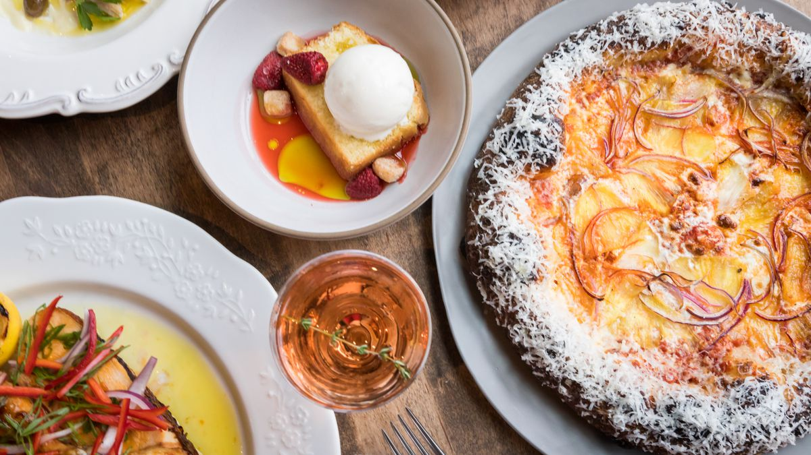
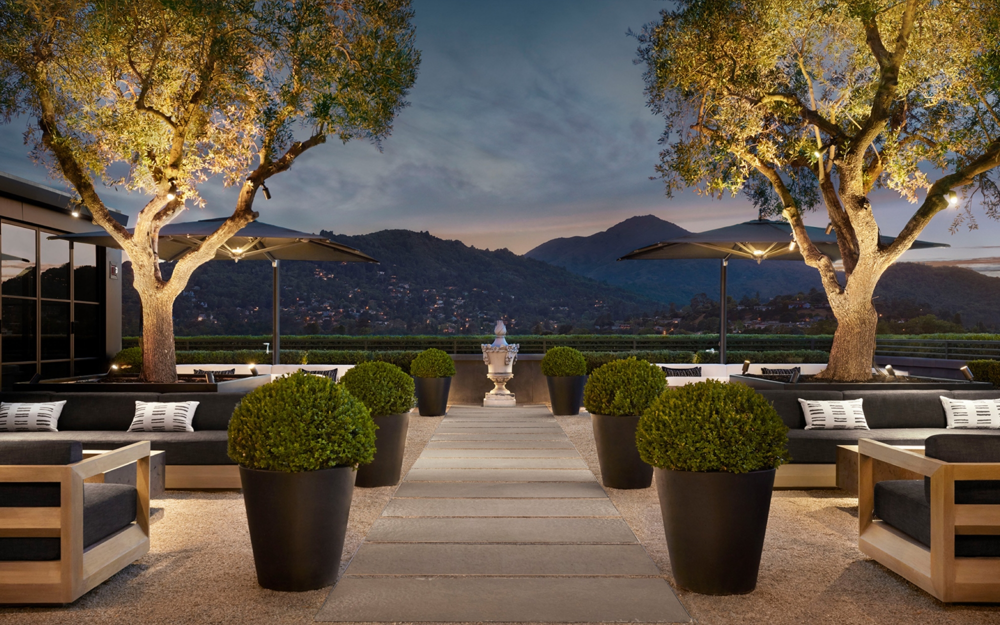
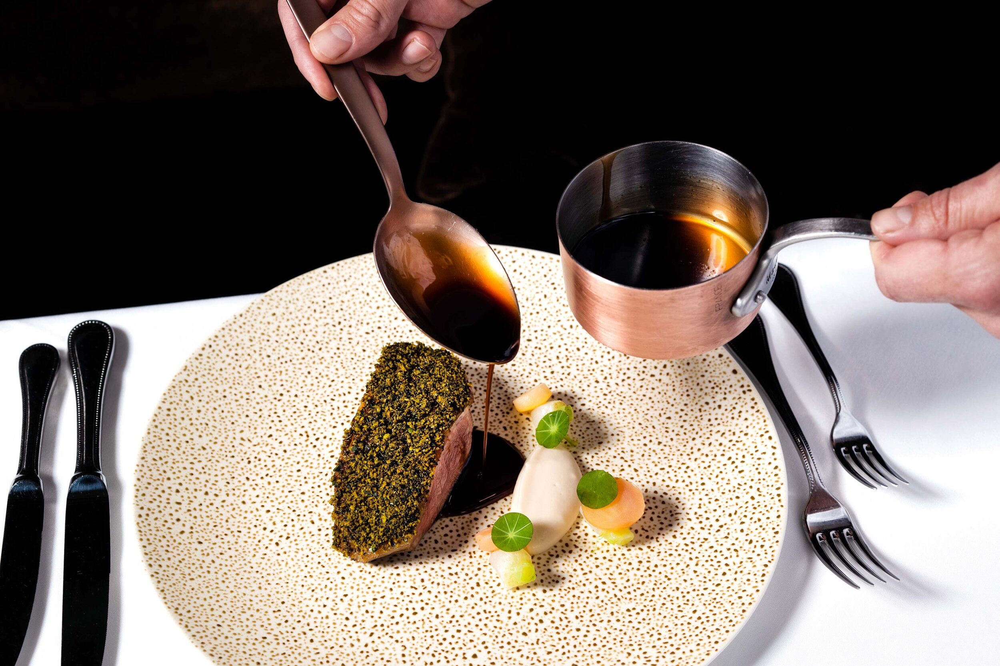

Lila's Favorite Places to Eat
Lila's Favorite Fancy places to eat
Here are some fancier restaurants I love eating at.
- Che Fico:
Che Fico is my go-to restaurnat for a nice dinner. I love their pizzas abd pastas and am always stuffed when I leave. 
- RH Marin:
Everytime I go to marin I love going to this restaurant. The food is super good but the best part is how pretty it is on the roof. 
- Spruce:
ALthough Spruce does not have many vegatarian options, the ones they do are so good. Also, the food is always so pretty. 